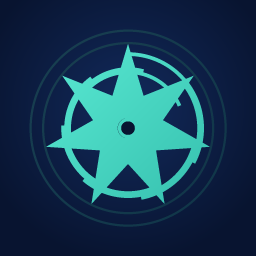

Swarmax is the audit and operations layer for AI agent fleets. Sealed evidence, SLA-alarmed triage, and AI-Act-ready erasure — in one zero-dependency Python service that sits beside the framework you already use.
$ make seed && make console
S1 DETECTED cost.daily>2x_ewma sev=Critical SLA= 24.0h
S3 DETECTED loop>=2 sev=Emergency SLA= 0.5h
S6 DETECTED escalation.age_max>24 sev=Emergency SLA= 2.0h
RESULT: 8/8 scenarios detected with correct severity+SLA
FP budget: 0.0% escalations on calm traffic (budget ≤5%)Every team running autonomous agents gets asked the same three questions. The framework answers none of them.
| The question | Dashboards | Swarmax |
|---|---|---|
| Is the fleet working? | one trace at a time | fleet-wide drift, loop and error alarms, each with an SLA clock |
| What did it cost? | one aggregate bill | cost per agent, per task, per tool loop |
| Can you prove it? | a screenshot (mutable) | an offline-verifiable, timestamped evidence chain |
Positioning. Datadog is how you know your services are healthy. Swarmax is how you know your agents are — and how you prove it. Frameworks (LangGraph, CrewAI, AutoGen…) build fleets; nobody operates them. That gap is the product.
Three cuts, one story: see it → drill in → prove it.
make drill prints
chain_ok=False.
Run it yourself: python demo.py — 8/8 alarm-injection
scenarios, the false-positive budget, and the MT-4 reliability spot-check, in one command.
The free tier is the full monitoring product, not a crippled one. Paid tiers sell proof and operations, not features.
| Tier | Price | Agents | What you buy |
|---|---|---|---|
| Open Core | $0 forever | unlimited (self-host) | full monitoring, alarms, console, crypto-shredding — Apache-2.0 |
| Pro | $29 / mo | 5 | sealed evidence + RFC 3161 counter-signatures + weekly report e-mail |
| Team | $99 / mo | 25 | OIDC SSO, SLA escalation queue, e-mail reports, priority support |
| Fleet + Proof | $599 / mo | 50 | evidence delivery package + auditor portal + independent verification API |
| Enterprise | from $2,400 / mo | BYO | SAML / SIEM / HA (written only after a paid pilot proves the need) |
Why a $29 entry point. It is cheap enough to expense, and it is the first tier where the proof is worth more than the price.
Swarmax is in dogfood. The measurement protocol (MT-1…MT-8) and its results are public in the repository, and the 10M-event scale gate ran on real hardware (worst per-agent query 78 ms). No paying customers yet — we would rather show you the drill than a logo wall.
This section stays exactly this until there are real customers. No invented testimonials.
openssl ts -verify. That is real cryptographic proof of what was
recorded and that it has not changed — it is not proof that the record
reflects reality (garbage in, sealed garbage out). We say it that way.make drill
runs the quarterly exit drill: export → rebuild on a clean store → verify.
Exit 0 means your evidence leaves with you intact.git clone https://github.com/goun7/Swarmax.git
cd Swarmax
make dev # install + schema setup
python demo.py # synthetic fleet: 8/8 alarms + FP budget + MT-4
make seed && make console # realistic demo fleet → http://127.0.0.1:8080
# demo login: root / swarmax-demo-admin